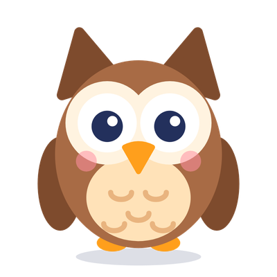

Jak się pisze: plaża czy plarza?
plaża
Poprawnie piszemy plaża – przez ż. Zapis „plarza” jest błędny.

Podpowiedź Sówki
Plaża – to słowo trzeba zapamiętać.
Sprawdź się
Jaka litera pasuje? Kliknij, żeby sprawdzić.
łó_ko
łóżko – Łóżko – to słowo trzeba zapamiętać. Więcej o „łóżko”
wie_a
wieża – Wieża – to słowo trzeba zapamiętać. Więcej o „wieża”
_ołnierz
żołnierz – Żołnierz – to słowo trzeba zapamiętać. Więcej o „żołnierz”
Reguły: rz czy ż
- rz piszemy, gdy w innej formie słowa słychać r: morze – morski, na górze – góra.
- rz piszemy po literach p, b, t, d, k, g, ch, j, w: brzeg, drzewo, krzesło, trzy, grzyb.
- Nazwy zawodów kończą się na -arz i -erz: lekarz, malarz, żołnierz.
- ż piszemy, gdy w innej formie słowa słychać g, h, z, s albo dz: noga – nóżka, druh – drużyna, wozić – wożę.
- Słowa z ż, które się nie wymienia, trzeba zapamiętać: żaba, żółw, żyrafa.
Jak to zapamiętać?
- Szukajcie słowa z tej samej rodziny – często od razu podpowiada literę
- Mówcie regułę na głos zamiast „źle”
- Trudne słowa powtórzcie jutro, za 3 dni i za tydzień
- Krótko i codziennie: 10 minut działa lepiej niż godzina raz w tygodniu
Ćwicz z Sówką w grze „Ó czy U?”
To słowo czeka w krainie Wulkan (przygoda „rz czy ż”). Dziecko przeciąga słowa do koszyków, lektor czyta każde słowo, a trudne słowa wracają w powtórkach. Bez reklam i bez zbierania danych.
Pierwsze krainy są za darmo, także w przeglądarce. Pełna wersja to jednorazowy zakup, bez subskrypcji.